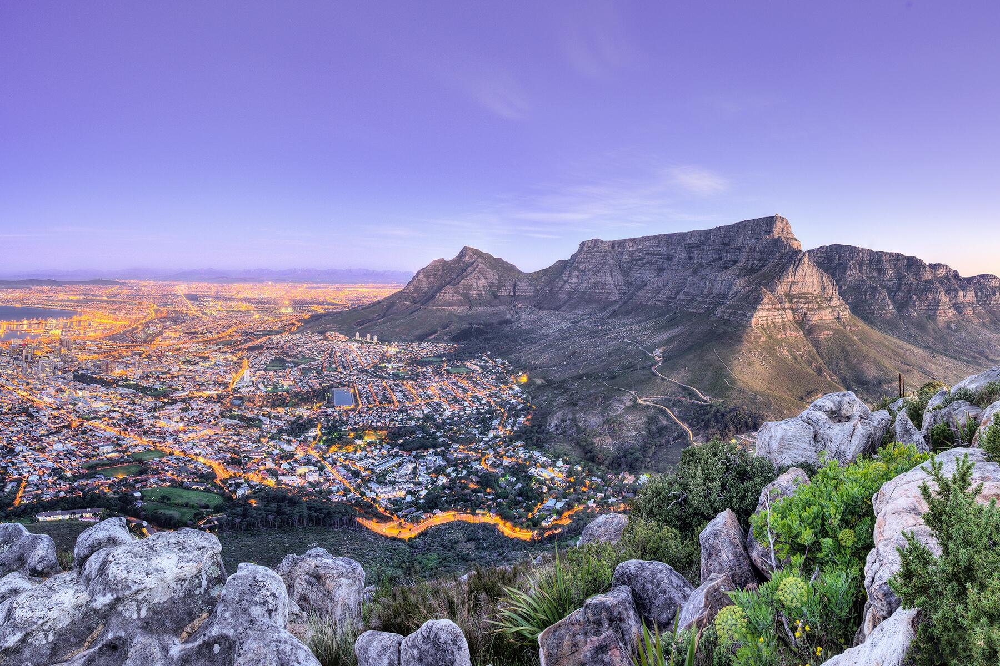

Welcome to Cape Town
Cape Town, located on the southwestern tip of South Africa, is known for its stunning landscapes, vibrant culture, and iconic landmarks. From the towering Table Mountain to the historic Robben Island, Cape Town offers a unique blend of natural beauty and history.
Top Attractions & Facts
- Table Mountain: Take the cable car or hike to the summit for panoramic city views.
- Robben Island: Historical prison where Nelson Mandela was held.
- V&A Waterfront: Shopping, dining, and cultural experiences by the harbor.
- Beaches: Clifton, Camps Bay, and Muizenberg offer sun, surf, and scenery.
- Cultural Spots: Bo-Kaap colorful neighborhood and Cape Town’s museums.